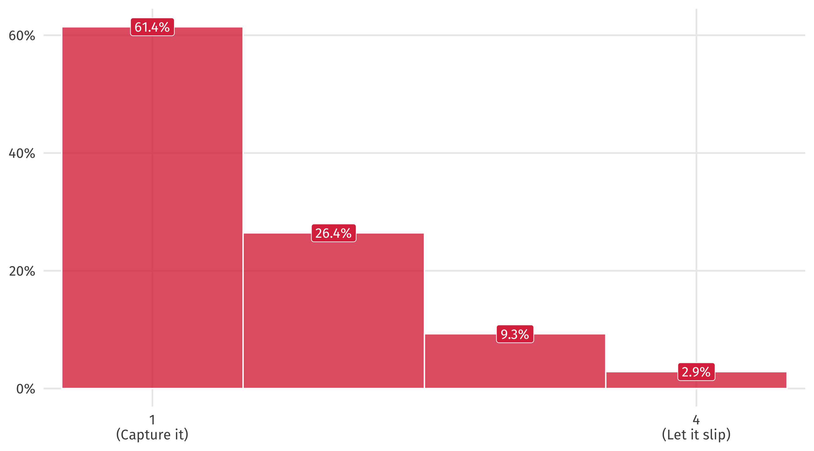

Hello
Quant Camp
September 25, 2024
Plan for today
What’s this class about?
Getting to know each other
Voting patterns in the United Nations
What’s this class about?
Most wanted lists
- Countries like the US spend lots of resources trying to kill, capture leaders of non-state armed groups
- Rebel groups, terrorist orgs, organized crime
- This is known in the literature as decapitation
- “to cut off the head”
Does decapitation work?
The data: Milton and Price (2020)
| Name | Year | Decapitated? | Collapsed? |
|---|---|---|---|
| April 19 Movement (M-19) | 1987 | No | No |
| April 19 Movement (M-19) | 1988 | No | No |
| Loyalist Volunteer Force (LVF) | 1996 | No | No |
| Loyalist Volunteer Force (LVF) | 1997 | Yes | No |
| al-Qaeda | 1988 | No | No |
| al-Qaeda | 1989 | No | No |
The results: a big effect!
Decapitated terrorist groups are 3 times more likely to collapse
Does this mean decapitation causes terrorist orgs to break down?
Not so fast…
Groups that are decapitated are different from groups that aren’t decapitated
| Groups that were decapitated |
|---|
| Harakat ul-Mujahidin (HuM) |
| Irish National Liberation Army (INLA) |
| Manuel Rodriguez Patriotic Front (FPMR) |
| Self-Defense Groups of Cordoba and Uraba (ACCU) |
| Groups that weren't decapitated |
|---|
| Ulster Volunteer Force (UVF) |
| Eritrean Liberation Front (ELF) |
| National Socialist Council of Nagaland-Isak-Muivah (NSCN-IM) |
| Islamic Movement of Uzbekistan |
The groups that are decapitated might be the weakest ones, the ones that states especially want to destroy, ones where leaders are more important, etc.
We need to adjust for these differences
What is this class about?
Wrangling and visualizing data to explore the questions we care about
Using models to describe how one political variable might cause another
Thinking causally about the relationships we observe
Grappling with uncertainty in the relationships we observe
An emphasis on doing
- No readings
- regular, sustained practice with hands-on problem sets
- 10 weeks of focused study in R, a powerful and in-demand programming language

Class philosophy:
Little to none of this:
\[\sigma^2 = \frac{\sum_{i=1}^{n}(x_i - \mu)^2} {n}\]
This class is practical
This class could be a couple lines on a resume:
Ability to work with data ➡️ marketable
R is popular in industry
Familiarity with R ➡️ other languages
Principles learned in R can be applied elsewhere (Excel)
Problem-solving in Slack
Let’s look at the website
There’s a lot of work (and coding) in this class
I warned you!
Anyone can do it, yes “even” you
you will be surprised at what you can do by the end
But you have to try your best
If this doesn’t work for you, take another class

Inspiration
It’s easy when you start out programming to get really frustrated and think, “Oh it’s me, I’m really stupid,” or, “I’m not made out to program.” But, that is absolutely not the case. Everyone gets frustrated. I still get frustrated occasionally when writing R code. It’s just a natural part of programming. So, it happens to everyone and gets less and less over time. Don’t blame yourself. Just take a break, do something fun, and then come back and try again later.
Hadley Wickham, Chief Data Scientist at RStudio
üö®üö® Problem sets = 50% üö®üö®
For the love of all that is good
Do the weekly check-ins; they are free points
Go to section, ask for help on Slack
Do not miss homeworks in this class
Missing one = leaving a big chunk of your final exam blank
I want students who are working hard to do well, but I can‚Äôt save you üé∂
Try your best and have fun
Who am I ?
Grew up in Cali, Colombia…

…and Ft. Lauderdale
Went to UF (go gata)…
North Carolina
PhD at Duke University in Durham, NC…
I specialize in political violence, development, and Latin America
South Carolina
…The baby
Due: 10/4 (any day now)
1st Birthday on 10/6
2nd Birthday on 10/6
The TAs
ü뮂Äçüéì Haley Darstaad
üë©‚Äçüéì Alexa Federice
ü뮂Äçüéì Richard Kornrumpf
üë©‚Äçüéì Amanda Loehrke
Who are you ?
What year are you?
Where are you from?
| aptos, california |
| elk grove, california |
| (fairfield, california) |
| Sacramento |
| elk grove, california |
| Porterville, California |
| Downey,Ca |
| santa bárbara, california |
| New Delhi, India |
| boston, massachusetts |
| moorpark, california |
| Los Angeles |
| Sacramento, CA |
| San Jose |
| sacramento, california |
| Los Gatos, California |
| san mateo, california |
| pinole, ca |
| San Jose, California. |
| Santa Rosa, California |
| san luis obispo ca |
| Shangrao,China |
| Tulare County |
| stockton, CA |
| imperial, california |
| san jose, california |
| san mateo, california |
| China |
| Portland, Oregon |
| vallejo, California |
Everyone’s in the same boat

Lots of cool stuff
| Something cool about you? |
|---|
| i know portuguese |
| I am learning to speak nahuatl. |
| I’m the first of my family to go to a 4-year university. |
| I work hard |
| I know nothing about coding |
| Homeowner at the age of 25 |
| I did research on the synthesis of histone deacetylases inhbitors for cancer treatment this summer |
| I once read a 700 page book in 4 days. |
| I like basketball a lot. |
| I have the same initials as FDR. |
| I’m a classically trained cellist. |
| I broke my leg because my brother pushed me down the stairs with a nerf gun. |
| I ran a politics club in high school where we gave people free soup for participating |
| I’m a second degree black belt and was an instructor at my dojo for four years. |
| I can recite the alphabet backwards from memory! |
| I have a black belt in karate |
| I used to upcycle thrifted clothing |
| I have been in choir since high school because I like to sing. |
| I’ve been to every asian country |
| I have Spanish roots in my family tree |
| i can juggle |
| I can wiggle my ears on their own |
| All my clothes are thrifted. |
| I know every line of The Muppets movie (2011). |
| I love to sport climb outdoors |
| I like to paint. |
| I was born on Valentine’s Day and love rock! |
| I am an avid reader |
| I enjoy collecting house plants as a hobby. |
| I have to retake this class |
Complete opposite? Doubt it
Most common answer: MOTHER
Divided on euthanasia
One shot, one opportunity
If you had one shot or one opportunity to seize everything you ever wanted in one moment. Would you capture it or just let it slip?
Apples
if you heard “Joe ate nearly two dozen apples”, what would the lower bound on that expression entail?
Best number?
Worst number?
Will we make enough?
What is hair metal?

Guns and Roses
Trash in someone else’s can?
Aliens
If you saw aliens and were fairly sure of what you saw but couldn’t prove it, would you tell people or keep it secret?
weak TV consensus: Riverdale
But i’m a creep…
UN Voting
At the United Nations, country proposes a resolution
The countries vote on it
Let’s look at some voting patterns